その他の製品
AT-6005
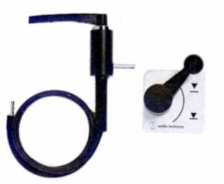
■価格 3,300円
■備考 リモートコントロール・エアリフト
ボード取付式の空気圧利用のアームリフター
（オプション）
専用延長ゴムパイプ50�p 150円
専用延長ゴムパイプ1m 300円
専用延長ゴムパイプ・ジョイント 150円
同社のアームAT-1009のアームリフターを汎用に改修したもの。
AT-6006
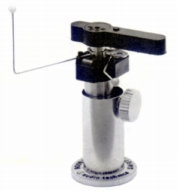
■価格 3,000円
■備考 オイルダンプ式オートマチック・アームリフター。
リセット時にはリフトプレートを押し下げる。
使用しない時のロック機能付き。
AT6006a
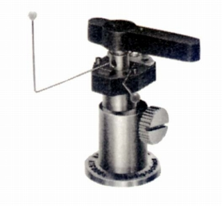
■価格 3,000円
■備考 トーンアームリフト”セイフティ・レイザー”。
演奏終了時に自動的にアームを上げ、カートリッジの針先の無駄な摩耗を防ぐ。
スムーズな動作のオイルダンプ式。
高さ調節ノブの形状変化以外のAT-6006との差異は不明。
AT-6003
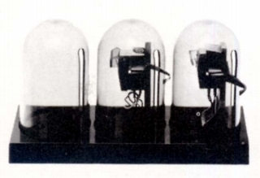
■価格 1,200円 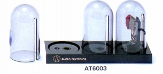
■備考 カートリッジ・ケース”トライカプセル”。
後に「AT6003」と改称。
AT-615
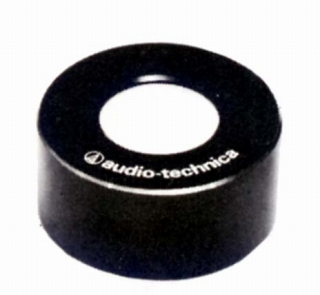
■価格 2,000円
■備考 水準器
プレイヤーケースなどの水平度チェック用。
アルミ削り出しハウジング。
後に「AT615」と改称。
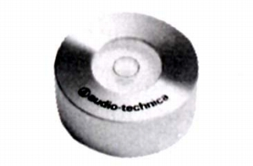
1984年版カタログまでは黒仕上げだったが、1986年版からはシルバー仕上げになった。
AT633
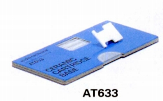
■価格 1,000円
■備考 セラミックス・カートリッジベース。
シェルとカートリッジの間に挟んで使用、重さ1.75g。
AT6031
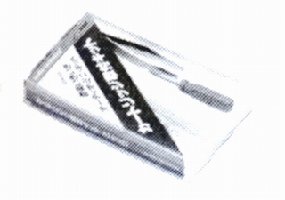
■価格 700円
■備考 カートリッジ取付用キット
内容は非磁性体ドライバー、ピンセット、ビス、ナット、ワッシャー。
カセットケースに収納。同じシリーズにデッキ用（AT5031)や接点洗浄用（AT6032)があった。
AT-6601
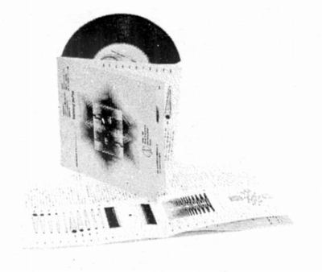
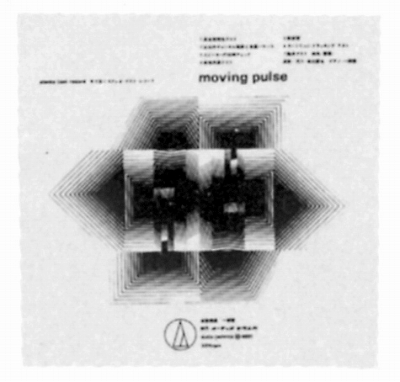
■価格 850円
■備考 テストレコード”ムービング・パルス”
チェック用のコンパクト盤。
音響構成担当は作曲家の一柳 慧氏。
収録内容は
・周波数特性テスト
・左右チャンネルの確認と音量バランス
・スピーカーの位相チェック
・低域共振テスト
・無音溝
・カートリッジ・トラッキングテスト
・総合テスト